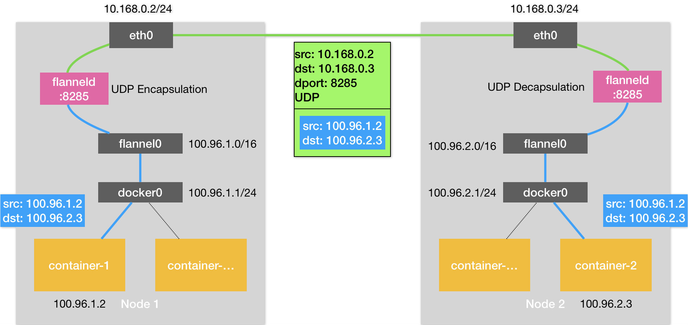
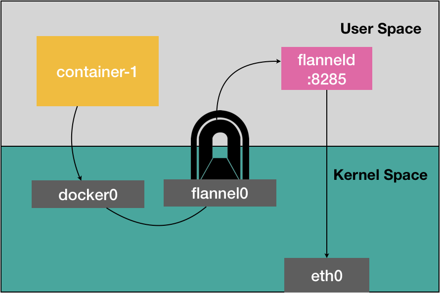
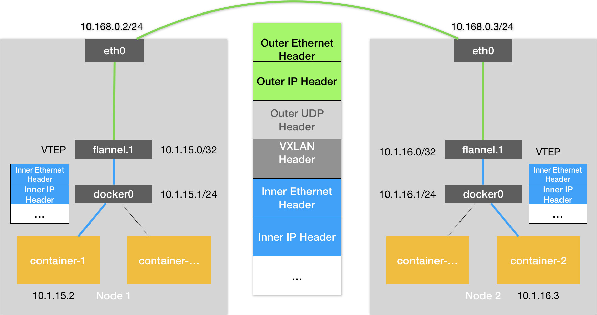
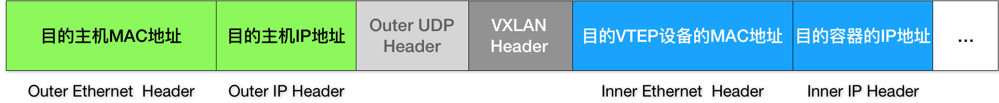

- 00 开篇词 打通“容器技术”的任督二脉.md
- 01 预习篇 · 小鲸鱼大事记（一）：初出茅庐.md
- 02 预习篇 · 小鲸鱼大事记（二）：崭露头角.md
- 03 预习篇 · 小鲸鱼大事记（三）：群雄并起.md
- 04 预习篇 · 小鲸鱼大事记（四）：尘埃落定.md
- 05 白话容器基础（一）：从进程说开去.md
- 06 白话容器基础（二）：隔离与限制.md
- 07 白话容器基础（三）：深入理解容器镜像.md
- 08 白话容器基础（四）：重新认识Docker容器.md
- 09 从容器到容器云：谈谈Kubernetes的本质.md
- 10 Kubernetes一键部署利器：kubeadm.md
- 11 从0到1：搭建一个完整的Kubernetes集群.md
- 12 牛刀小试：我的第一个容器化应用.md
- 13 为什么我们需要Pod？.md
- 14 深入解析Pod对象（一）：基本概念.md
- 15 深入解析Pod对象（二）：使用进阶.md
- 16 编排其实很简单：谈谈“控制器”模型.md
- 17 经典PaaS的记忆：作业副本与水平扩展.md
- 18 深入理解StatefulSet（一）：拓扑状态.md
- 19 深入理解StatefulSet（二）：存储状态.md
- 20 深入理解StatefulSet（三）：有状态应用实践.md
- 21 容器化守护进程的意义：DaemonSet.md
- 22 撬动离线业务：Job与CronJob.md
- 23 声明式API与Kubernetes编程范式.md
- 24 深入解析声明式API（一）：API对象的奥秘.md
- 25 深入解析声明式API（二）：编写自定义控制器.md
- 26 基于角色的权限控制：RBAC.md
- 27 聪明的微创新：Operator工作原理解读.md
- 28 PV、PVC、StorageClass，这些到底在说啥？.md
- 29 PV、PVC体系是不是多此一举？从本地持久化卷谈起.md
- 30 编写自己的存储插件：FlexVolume与CSI.md
- 31 容器存储实践：CSI插件编写指南.md
- 32 浅谈容器网络.md
- 33 深入解析容器跨主机网络.md
- 34 Kubernetes网络模型与CNI网络插件.md
- 35 解读Kubernetes三层网络方案.md
- 36 为什么说Kubernetes只有soft multi-tenancy？.md
- 37 找到容器不容易：Service、DNS与服务发现.md
- 38 从外界连通Service与Service调试“三板斧”.md
- 39 谈谈Service与Ingress.md
- 40 Kubernetes的资源模型与资源管理.md
- 41 十字路口上的Kubernetes默认调度器.md
- 42 Kubernetes默认调度器调度策略解析.md
- 43 Kubernetes默认调度器的优先级与抢占机制.md
- 44 Kubernetes GPU管理与Device Plugin机制.md
- 45 幕后英雄：SIG-Node与CRI.md
- 46 解读 CRI 与 容器运行时.md
- 47 绝不仅仅是安全：Kata Containers 与 gVisor.md
- 48 Prometheus、Metrics Server与Kubernetes监控体系.md
- 49 Custom Metrics_ 让Auto Scaling不再“食之无味”.md
- 50 让日志无处可逃：容器日志收集与管理.md
- 51 谈谈Kubernetes开源社区和未来走向.md
- 52 答疑：在问题中解决问题，在思考中产生思考.md
- 特别放送 2019 年，容器技术生态会发生些什么？.md
- 特别放送 基于 Kubernetes 的云原生应用管理，到底应该怎么做？.md
- 结束语 Kubernetes：赢开发者赢天下.md
33 深入解析容器跨主机网络
你好，我是张磊。今天我和你分享的主题是：深入解析容器跨主机网络。
在上一篇文章中，我为你详细讲解了在单机环境下，Linux容器网络的实现原理（网桥模式）。并且提到了，在Docker的默认配置下，不同宿主机上的容器通过IP地址进行互相访问是根本做不到的。
而正是为了解决这个容器“跨主通信”的问题，社区里才出现了那么多的容器网络方案。而且，相信你一直以来都有这样的疑问：这些网络方案的工作原理到底是什么？
要理解容器“跨主通信”的原理，就一定要先从Flannel这个项目说起。
Flannel项目是CoreOS公司主推的容器网络方案。事实上，Flannel项目本身只是一个框架，真正为我们提供容器网络功能的，是Flannel的后端实现。目前，Flannel支持三种后端实现，分别是：
VXLAN；
host-gw；
UDP。
这三种不同的后端实现，正代表了三种容器跨主网络的主流实现方法。其中，host-gw模式，我会在下一篇文章中再做详细介绍。
而UDP模式，是Flannel项目最早支持的一种方式，却也是性能最差的一种方式。所以，这个模式目前已经被弃用。不过，Flannel之所以最先选择UDP模式，就是因为这种模式是最直接、也是最容易理解的容器跨主网络实现。
所以，在今天这篇文章中，我会先从UDP模式开始，来为你讲解容器“跨主网络”的实现原理。
在这个例子中，我有两台宿主机。
- 宿主机Node 1上有一个容器container-1，它的IP地址是100.96.1.2，对应的docker0网桥的地址是：100.96.1.1/24。
- 宿主机Node 2上有一个容器container-2，它的IP地址是100.96.2.3，对应的docker0网桥的地址是：100.96.2.1/24。
我们现在的任务，就是让container-1访问container-2。
这种情况下，container-1容器里的进程发起的IP包，其源地址就是100.96.1.2，目的地址就是100.96.2.3。由于目的地址100.96.2.3并不在Node 1的docker0网桥的网段里，所以这个IP包会被交给默认路由规则，通过容器的网关进入docker0网桥（如果是同一台宿主机上的容器间通信，走的是直连规则），从而出现在宿主机上。
这时候，这个IP包的下一个目的地，就取决于宿主机上的路由规则了。此时，Flannel已经在宿主机上创建出了一系列的路由规则，以Node 1为例，如下所示：
# 在Node 1上
$ ip route
default via 10.168.0.1 dev eth0
100.96.0.0/16 dev flannel0 proto kernel scope link src 100.96.1.0
100.96.1.0/24 dev docker0 proto kernel scope link src 100.96.1.1
10.168.0.0/24 dev eth0 proto kernel scope link src 10.168.0.2
可以看到，由于我们的IP包的目的地址是100.96.2.3，它匹配不到本机docker0网桥对应的100.96.1.0/24网段，只能匹配到第二条、也就是100.96.0.0/16对应的这条路由规则，从而进入到一个叫作flannel0的设备中。
而这个flannel0设备的类型就比较有意思了：它是一个TUN设备（Tunnel设备）。
在Linux中，TUN设备是一种工作在三层（Network Layer）的虚拟网络设备。TUN设备的功能非常简单，即：在操作系统内核和用户应用程序之间传递IP包。
以flannel0设备为例：像上面提到的情况，当操作系统将一个IP包发送给flannel0设备之后，flannel0就会把这个IP包，交给创建这个设备的应用程序，也就是Flannel进程。这是一个从内核态（Linux操作系统）向用户态（Flannel进程）的流动方向。
反之，如果Flannel进程向flannel0设备发送了一个IP包，那么这个IP包就会出现在宿主机网络栈中，然后根据宿主机的路由表进行下一步处理。这是一个从用户态向内核态的流动方向。
所以，当IP包从容器经过docker0出现在宿主机，然后又根据路由表进入flannel0设备后，宿主机上的flanneld进程（Flannel项目在每个宿主机上的主进程），就会收到这个IP包。然后，flanneld看到了这个IP包的目的地址，是100.96.2.3，就把它发送给了Node 2宿主机。
等一下，flanneld又是如何知道这个IP地址对应的容器，是运行在Node 2上的呢？
这里，就用到了Flannel项目里一个非常重要的概念：子网（Subnet）。
事实上，在由Flannel管理的容器网络里，一台宿主机上的所有容器，都属于该宿主机被分配的一个“子网”。在我们的例子中，Node 1的子网是100.96.1.0/24，container-1的IP地址是100.96.1.2。Node 2的子网是100.96.2.0/24，container-2的IP地址是100.96.2.3。
而这些子网与宿主机的对应关系，正是保存在Etcd当中，如下所示：
$ etcdctl ls /coreos.com/network/subnets
/coreos.com/network/subnets/100.96.1.0-24
/coreos.com/network/subnets/100.96.2.0-24
/coreos.com/network/subnets/100.96.3.0-24
所以，flanneld进程在处理由flannel0传入的IP包时，就可以根据目的IP的地址（比如100.96.2.3），匹配到对应的子网（比如100.96.2.0/24），从Etcd中找到这个子网对应的宿主机的IP地址是10.168.0.3，如下所示：
$ etcdctl get /coreos.com/network/subnets/100.96.2.0-24
{"PublicIP":"10.168.0.3"}
而对于flanneld来说，只要Node 1和Node 2是互通的，那么flanneld作为Node 1上的一个普通进程，就一定可以通过上述IP地址（10.168.0.3）访问到Node 2，这没有任何问题。
所以说，flanneld在收到container-1发给container-2的IP包之后，就会把这个IP包直接封装在一个UDP包里，然后发送给Node 2。不难理解，这个UDP包的源地址，就是flanneld所在的Node 1的地址，而目的地址，则是container-2所在的宿主机Node 2的地址。
当然，这个请求得以完成的原因是，每台宿主机上的flanneld，都监听着一个8285端口，所以flanneld只要把UDP包发往Node 2的8285端口即可。
通过这样一个普通的、宿主机之间的UDP通信，一个UDP包就从Node 1到达了Node 2。而Node 2上监听8285端口的进程也是flanneld，所以这时候，flanneld就可以从这个UDP包里解析出封装在里面的、container-1发来的原IP包。
而接下来flanneld的工作就非常简单了：flanneld会直接把这个IP包发送给它所管理的TUN设备，即flannel0设备。
根据我前面讲解的TUN设备的原理，这正是一个从用户态向内核态的流动方向（Flannel进程向TUN设备发送数据包），所以Linux内核网络栈就会负责处理这个IP包，具体的处理方法，就是通过本机的路由表来寻找这个IP包的下一步流向。
而Node 2上的路由表，跟Node 1非常类似，如下所示：
# 在Node 2上
$ ip route
default via 10.168.0.1 dev eth0
100.96.0.0/16 dev flannel0 proto kernel scope link src 100.96.2.0
100.96.2.0/24 dev docker0 proto kernel scope link src 100.96.2.1
10.168.0.0/24 dev eth0 proto kernel scope link src 10.168.0.3
由于这个IP包的目的地址是100.96.2.3，它跟第三条、也就是100.96.2.0/24网段对应的路由规则匹配更加精确。所以，Linux内核就会按照这条路由规则，把这个IP包转发给docker0网桥。
接下来的流程，就如同我在上一篇文章《浅谈容器网络》中和你分享的那样，docker0网桥会扮演二层交换机的角色，将数据包发送给正确的端口，进而通过Veth Pair设备进入到container-2的Network Namespace里。
而container-2返回给container-1的数据包，则会经过与上述过程完全相反的路径回到container-1中。
需要注意的是，上述流程要正确工作还有一个重要的前提，那就是docker0网桥的地址范围必须是Flannel为宿主机分配的子网。这个很容易实现，以Node 1为例，你只需要给它上面的Docker Daemon启动时配置如下所示的bip参数即可：
$ FLANNEL_SUBNET=100.96.1.1/24
$ dockerd --bip=$FLANNEL_SUBNET ...
以上，就是基于Flannel UDP模式的跨主通信的基本原理了。我把它总结成了一幅原理图，如下所示。

可以看到，Flannel UDP模式提供的其实是一个三层的Overlay网络，即：它首先对发出端的IP包进行UDP封装，然后在接收端进行解封装拿到原始的IP包，进而把这个IP包转发给目标容器。这就好比，Flannel在不同宿主机上的两个容器之间打通了一条“隧道”，使得这两个容器可以直接使用IP地址进行通信，而无需关心容器和宿主机的分布情况。
我前面曾经提到，上述UDP模式有严重的性能问题，所以已经被废弃了。通过我上面的讲述，你有没有发现性能问题出现在了哪里呢？
实际上，相比于两台宿主机之间的直接通信，基于Flannel UDP模式的容器通信多了一个额外的步骤，即flanneld的处理过程。而这个过程，由于使用到了flannel0这个TUN设备，仅在发出IP包的过程中，就需要经过三次用户态与内核态之间的数据拷贝，如下所示：

我们可以看到：
第一次，用户态的容器进程发出的IP包经过docker0网桥进入内核态；
第二次，IP包根据路由表进入TUN（flannel0）设备，从而回到用户态的flanneld进程；
第三次，flanneld进行UDP封包之后重新进入内核态，将UDP包通过宿主机的eth0发出去。
此外，我们还可以看到，Flannel进行UDP封装（Encapsulation）和解封装（Decapsulation）的过程，也都是在用户态完成的。在Linux操作系统中，上述这些上下文切换和用户态操作的代价其实是比较高的，这也正是造成Flannel UDP模式性能不好的主要原因。
所以说，我们在进行系统级编程的时候，有一个非常重要的优化原则，就是要减少用户态到内核态的切换次数，并且把核心的处理逻辑都放在内核态进行。这也是为什么，Flannel后来支持的VXLAN模式，逐渐成为了主流的容器网络方案的原因。
VXLAN，即Virtual Extensible LAN（虚拟可扩展局域网），是Linux内核本身就支持的一种网络虚似化技术。所以说，VXLAN可以完全在内核态实现上述封装和解封装的工作，从而通过与前面相似的“隧道”机制，构建出覆盖网络（Overlay Network）。
VXLAN的覆盖网络的设计思想是：在现有的三层网络之上，“覆盖”一层虚拟的、由内核VXLAN模块负责维护的二层网络，使得连接在这个VXLAN二层网络上的“主机”（虚拟机或者容器都可以）之间，可以像在同一个局域网（LAN）里那样自由通信。当然，实际上，这些“主机”可能分布在不同的宿主机上，甚至是分布在不同的物理机房里。
而为了能够在二层网络上打通“隧道”，VXLAN会在宿主机上设置一个特殊的网络设备作为“隧道”的两端。这个设备就叫作VTEP，即：VXLAN Tunnel End Point（虚拟隧道端点）。
而VTEP设备的作用，其实跟前面的flanneld进程非常相似。只不过，它进行封装和解封装的对象，是二层数据帧（Ethernet frame）；而且这个工作的执行流程，全部是在内核里完成的（因为VXLAN本身就是Linux内核中的一个模块）。
上述基于VTEP设备进行“隧道”通信的流程，我也为你总结成了一幅图，如下所示：

可以看到，图中每台宿主机上名叫flannel.1的设备，就是VXLAN所需的VTEP设备，它既有IP地址，也有MAC地址。
现在，我们的container-1的IP地址是10.1.15.2，要访问的container-2的IP地址是10.1.16.3。
那么，与前面UDP模式的流程类似，当container-1发出请求之后，这个目的地址是10.1.16.3的IP包，会先出现在docker0网桥，然后被路由到本机flannel.1设备进行处理。也就是说，来到了“隧道”的入口。为了方便叙述，我接下来会把这个IP包称为“原始IP包”。
为了能够将“原始IP包”封装并且发送到正确的宿主机，VXLAN就需要找到这条“隧道”的出口，即：目的宿主机的VTEP设备。
而这个设备的信息，正是每台宿主机上的flanneld进程负责维护的。
比如，当Node 2启动并加入Flannel网络之后，在Node 1（以及所有其他节点）上，flanneld就会添加一条如下所示的路由规则：
$ route -n
Kernel IP routing table
Destination Gateway Genmask Flags Metric Ref Use Iface
...
10.1.16.0 10.1.16.0 255.255.255.0 UG 0 0 0 flannel.1
这条规则的意思是：凡是发往10.1.16.0/24网段的IP包，都需要经过flannel.1设备发出，并且，它最后被发往的网关地址是：10.1.16.0。
从图3的Flannel VXLAN模式的流程图中我们可以看到，10.1.16.0正是Node 2上的VTEP设备（也就是flannel.1设备）的IP地址。
为了方便叙述，接下来我会把Node 1和Node 2上的flannel.1设备分别称为“源VTEP设备”和“目的VTEP设备”。
而这些VTEP设备之间，就需要想办法组成一个虚拟的二层网络，即：通过二层数据帧进行通信。
所以在我们的例子中，“源VTEP设备”收到“原始IP包”后，就要想办法把“原始IP包”加上一个目的MAC地址，封装成一个二层数据帧，然后发送给“目的VTEP设备”（当然，这么做还是因为这个IP包的目的地址不是本机）。
这里需要解决的问题就是：“目的VTEP设备”的MAC地址是什么？
此时，根据前面的路由记录，我们已经知道了“目的VTEP设备”的IP地址。而要根据三层IP地址查询对应的二层MAC地址，这正是ARP（Address Resolution Protocol ）表的功能。
而这里要用到的ARP记录，也是flanneld进程在Node 2节点启动时，自动添加在Node 1上的。我们可以通过ip命令看到它，如下所示：
# 在Node 1上
$ ip neigh show dev flannel.1
10.1.16.0 lladdr 5e:f8:4f:00:e3:37 PERMANENT
这条记录的意思非常明确，即：IP地址10.1.16.0，对应的MAC地址是5e:f8:4f:00:e3:37。
可以看到，最新版本的Flannel并不依赖L3 MISS事件和ARP学习，而会在每台节点启动时把它的VTEP设备对应的ARP记录，直接下放到其他每台宿主机上。
有了这个“目的VTEP设备”的MAC地址，Linux内核就可以开始二层封包工作了。这个二层帧的格式，如下所示：
可以看到，Linux内核会把“目的VTEP设备”的MAC地址，填写在图中的Inner Ethernet Header字段，得到一个二层数据帧。
需要注意的是，上述封包过程只是加一个二层头，不会改变“原始IP包”的内容。所以图中的Inner IP Header字段，依然是container-2的IP地址，即10.1.16.3。
但是，上面提到的这些VTEP设备的MAC地址，对于宿主机网络来说并没有什么实际意义。所以上面封装出来的这个数据帧，并不能在我们的宿主机二层网络里传输。为了方便叙述，我们把它称为“内部数据帧”（Inner Ethernet Frame）。
所以接下来，Linux内核还需要再把“内部数据帧”进一步封装成为宿主机网络里的一个普通的数据帧，好让它“载着”“内部数据帧”，通过宿主机的eth0网卡进行传输。
我们把这次要封装出来的、宿主机对应的数据帧称为“外部数据帧”（Outer Ethernet Frame）。
为了实现这个“搭便车”的机制，Linux内核会在“内部数据帧”前面，加上一个特殊的VXLAN头，用来表示这个“乘客”实际上是一个VXLAN要使用的数据帧。
而这个VXLAN头里有一个重要的标志叫作VNI，它是VTEP设备识别某个数据帧是不是应该归自己处理的重要标识。而在Flannel中，VNI的默认值是1，这也是为何，宿主机上的VTEP设备都叫作flannel.1的原因，这里的“1”，其实就是VNI的值。
然后，Linux内核会把这个数据帧封装进一个UDP包里发出去。
所以，跟UDP模式类似，在宿主机看来，它会以为自己的flannel.1设备只是在向另外一台宿主机的flannel.1设备，发起了一次普通的UDP链接。它哪里会知道，这个UDP包里面，其实是一个完整的二层数据帧。这是不是跟特洛伊木马的故事非常像呢？
不过，不要忘了，一个flannel.1设备只知道另一端的flannel.1设备的MAC地址，却不知道对应的宿主机地址是什么。
也就是说，这个UDP包该发给哪台宿主机呢？
在这种场景下，flannel.1设备实际上要扮演一个“网桥”的角色，在二层网络进行UDP包的转发。而在Linux内核里面，“网桥”设备进行转发的依据，来自于一个叫作FDB（Forwarding Database）的转发数据库。
不难想到，这个flannel.1“网桥”对应的FDB信息，也是flanneld进程负责维护的。它的内容可以通过bridge fdb命令查看到，如下所示：
# 在Node 1上，使用“目的VTEP设备”的MAC地址进行查询
$ bridge fdb show flannel.1 | grep 5e:f8:4f:00:e3:37
5e:f8:4f:00:e3:37 dev flannel.1 dst 10.168.0.3 self permanent
可以看到，在上面这条FDB记录里，指定了这样一条规则，即：
发往我们前面提到的“目的VTEP设备”（MAC地址是5e:f8:4f:00:e3:37）的二层数据帧，应该通过flannel.1设备，发往IP地址为10.168.0.3的主机。显然，这台主机正是Node 2，UDP包要发往的目的地就找到了。
所以接下来的流程，就是一个正常的、宿主机网络上的封包工作。
我们知道，UDP包是一个四层数据包，所以Linux内核会在它前面加上一个IP头，即原理图中的Outer IP Header，组成一个IP包。并且，在这个IP头里，会填上前面通过FDB查询出来的目的主机的IP地址，即Node 2的IP地址10.168.0.3。
然后，Linux内核再在这个IP包前面加上二层数据帧头，即原理图中的Outer Ethernet Header，并把Node 2的MAC地址填进去。这个MAC地址本身，是Node 1的ARP表要学习的内容，无需Flannel维护。这时候，我们封装出来的“外部数据帧”的格式，如下所示：

这样，封包工作就宣告完成了。
接下来，Node 1上的flannel.1设备就可以把这个数据帧从Node 1的eth0网卡发出去。显然，这个帧会经过宿主机网络来到Node 2的eth0网卡。
这时候，Node 2的内核网络栈会发现这个数据帧里有VXLAN Header，并且VNI=1。所以Linux内核会对它进行拆包，拿到里面的内部数据帧，然后根据VNI的值，把它交给Node 2上的flannel.1设备。
而flannel.1设备则会进一步拆包，取出“原始IP包”。接下来就回到了我在上一篇文章中分享的单机容器网络的处理流程。最终，IP包就进入到了container-2容器的Network Namespace里。
以上，就是Flannel VXLAN模式的具体工作原理了。
总结
在本篇文章中，我为你详细讲解了Flannel UDP和VXLAN模式的工作原理。这两种模式其实都可以称作“隧道”机制，也是很多其他容器网络插件的基础。比如Weave的两种模式，以及Docker的Overlay模式。
此外，从上面的讲解中我们可以看到，VXLAN模式组建的覆盖网络，其实就是一个由不同宿主机上的VTEP设备，也就是flannel.1设备组成的虚拟二层网络。对于VTEP设备来说，它发出的“内部数据帧”就仿佛是一直在这个虚拟的二层网络上流动。这，也正是覆盖网络的含义。
备注：如果你想要在我们前面部署的集群中实践Flannel的话，可以在Master节点上执行如下命令来替换网络插件。- 第一步，执行
$ rm -rf /etc/cni/net.d/*；- 第二步，执行$ kubectl delete -f "https://cloud.weave.works/k8s/net?k8s-version=1.11"；- 第三步，在/etc/kubernetes/manifests/kube-controller-manager.yaml里，为容器启动命令添加如下两个参数：---allocate-node-cidrs=true---cluster-cidr=10.244.0.0/16- 第四步， 重启所有kubelet；- 第五步， 执行$ kubectl create -f https://raw.githubusercontent.com/coreos/flannel/bc79dd1505b0c8681ece4de4c0d86c5cd2643275/Documentation/kube-flannel.yml。
思考题
可以看到，Flannel通过上述的“隧道”机制，实现了容器之间三层网络（IP地址）的连通性。但是，根据这个机制的工作原理，你认为Flannel能负责保证二层网络（MAC地址）的连通性吗？为什么呢？
感谢你的收听，欢迎你给我留言，也欢迎分享给更多的朋友一起阅读。
© 2019 - 2023 Liangliang Lee. Powered by gin and hexo-theme-book.